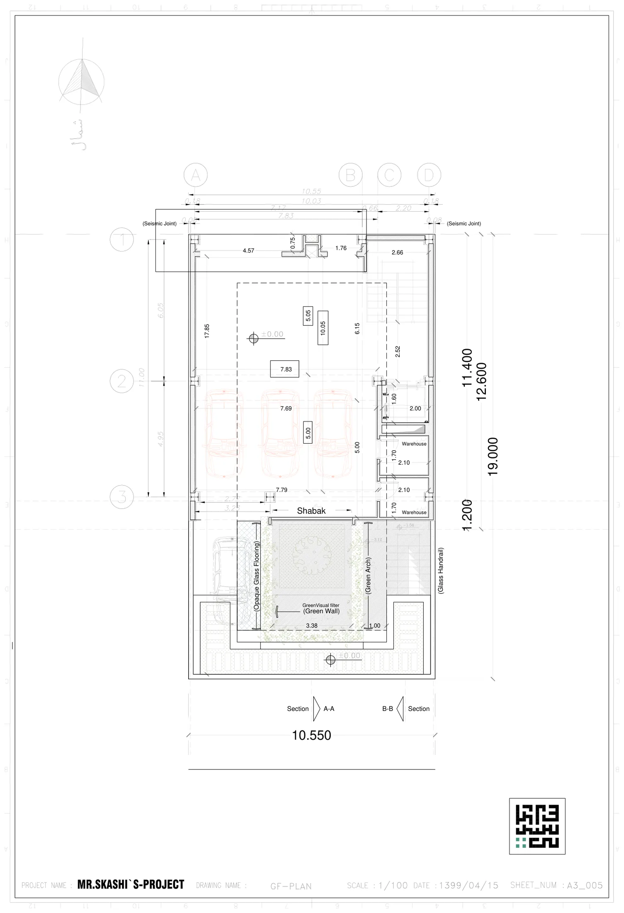

نقشه · طرح ۱۳۹۹
پلان همکف — پارکینگ
همکف (±۰٫۰۰)
{kind=link}

به چه نگاه کنیم
- سه خودرو در دهانهٔ ۷٫۸۳×۵٫۰۰ (خطچین ۱۰٫۰۵×۵٫۰۵) و خودروی چهارم در حیاط، کنار نوار کف شیشهای.
- نوشتهٔ Shabak روی محور ۳: پردهٔ مشبک میان پارکینگ و خالیِ گودال باغچه.
- سه برچسب دور خالیِ حیاط: Opaque Glass Flooring (کف شیشهٔ مات، نوار غربی)، Green Arch (طاق سبز، نوار شرقی) و Green Visual filter / Green Wall با زیرنویس «دیوار سبز» در لبهٔ جنوبی.
- نماد درخت در میانهٔ خالی با تراز −۳٫۱۲ زیرش؛ پلهای با پاگرد −۱٫۵۶ که از حیاط به گودال باغچه میرود و Glass Handrail کنارش.
- ورودی شمالی با اندازههای ۴٫۵۷ | ۰٫۷۵ | ۱٫۷۶ | ۲٫۶۶ و هستهٔ پله و آسانسور (۲٫۰۰×۱٫۶۰) در گوشهٔ شمالشرقی.
- دو انباری (Warehouse) ۲٫۱۰×۱٫۷۰ پشت هم در دهانهٔ شرقی.
- دیوار غربی ۱۷٫۸۵ متری یکسره؛ درز انقطاع ۰٫۰۸ دو طرف.
- حیاط جنوبی با سنگفرش خطخطی و تراز ±۰٫۰۰؛ اندازههای ۳٫۳۸ و ۱٫۰۰ دور خالی.
فضاها
پارکینگ (۳ خودرو)، ورودی، پلکان، آسانسور، انباری (۲)، مشبک، خالیِ گودال باغچه، کف شیشهٔ مات، طاق سبز، دیوار سبز، حیاط (۱ خودرو)
یادداشت
این برگه همان جایی است که ایدهٔ درخت و گودال باغچه با پارکینگ کنار میآید: خودروها پشت پردهٔ مشبک میمانند، خالیِ حیاط با کف شیشهٔ مات هم راهرو است و هم نورگیر زیرزمین، و دیوار سبز و طاق سبز پاسخ بند ۸ شاخصها هستند. حلنشده: جای دوچرخه و موتور نیست؛ ورود پیاده از همان دهانهٔ خودرو است؛ جزئیات مشبک و کف شیشهای فقط با یک برچسب گفته شده. کادر عنوان: MR.SKASHI`S-PROJECT / GF-PLAN / ۱۳۹۹/۰۴/۱۵ / A3_005.